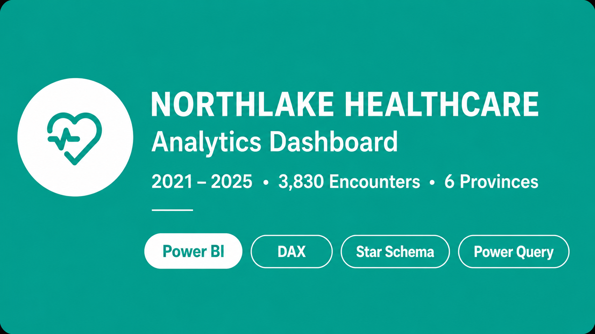
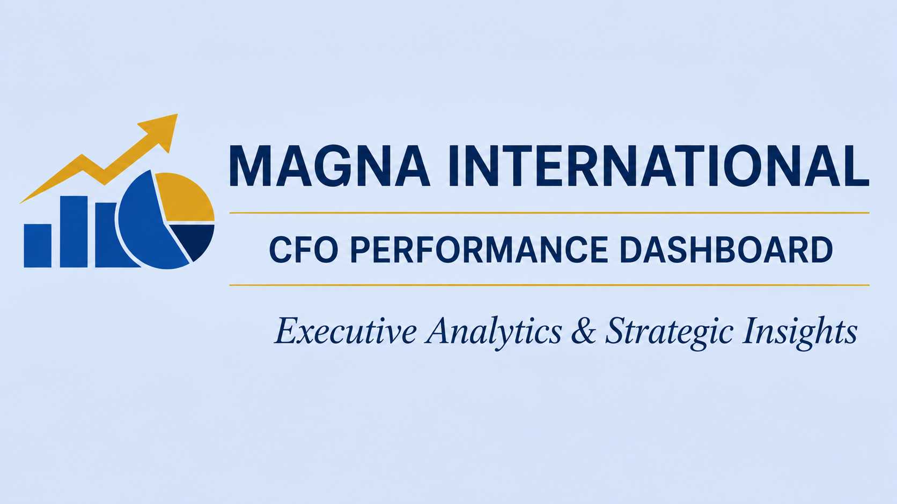
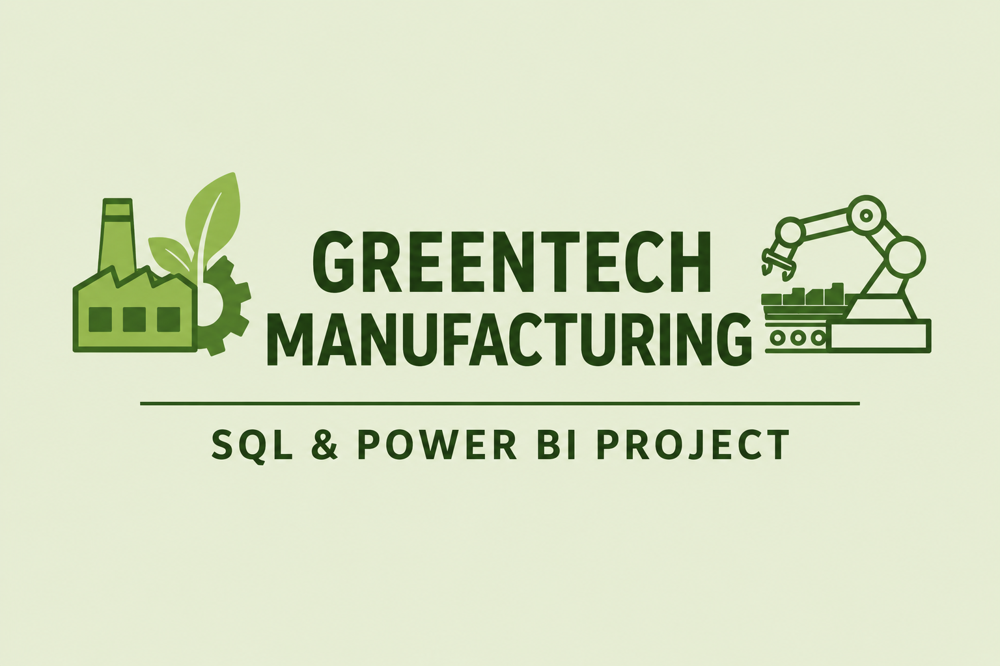
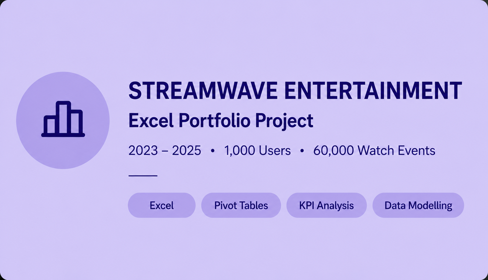

I turn complex data into clear decisions. With 15+ years of experience spanning financial expertise and business intelligence, I help organizations drive results across healthcare, financial services, and manufacturing. As a Senior Data Analyst and Business Intelligence Specialist, I build dashboards, KPI frameworks, and reporting solutions that transform data into actionable business insights.
At AXA One Health, I led analytics initiatives that improved visibility into clinical costs and health plan performance, delivering strategic insights in a highly regulated environment. Based in Manitoba, Canada, I am open to Senior Data Analyst, BI Analyst, and Data & Reporting Specialist opportunities across healthcare, financial services, manufacturing, and related industries.
Sector Experience
- Healthcare
- Banking
- Financial Services
- Manufacturing
- Accounting Tech / SaaS
Certifications & Education
- Associate Member — ICAN
- Power BI Specialist — Maven Analytics
- Advanced MS Excel for Finance Professionals
- Power BI Datacense
- Data Analysis — Robertson College
- B.Sc. Economics — Olabisi Onabanjo University, 2008
Tools that power my analytical work.
A focused toolkit built for real-world data work from raw data ingestion and transformation through to executive-level dashboards and automated reporting pipelines.
📊 Business Intelligence & Visualisation
🗄️ Data Engineering & Transformation
💡 Reporting & Analytics
🏥 Health Sector Analytics
🏦 Banking & Financial Domain
🤝 Stakeholder & Business Skills
15 years of data across five sectors.
- BIDesigned and delivered Power BI dashboards and self-service BI solutions that improved stakeholder visibility into operational metrics, reducing manual reporting effort by 30%.
- DAConducted end-to-end data analysis across client business functions — profiling datasets, identifying anomalies, and surfacing actionable trends.
- BIBuilt automated KPI tracking and reporting pipelines in Excel and Power BI.
- DACleaned, mapped, and reconciled multi-source datasets using Power Query and SQL.
- BILed requirements-gathering workshops with business and senior stakeholders.
- DACollected, profiled, and validated datasets from multiple source systems to improve data integrity.
- BIBuilt and maintained reporting dashboards and BI workflows for financial performance trends.
- DAResolved data quality issues, delivering a measurable 25% improvement in data accuracy.
- DAMapped and documented data requirements for system migrations and integrations.
- BIAutomated recurring analysis packs and financial reports using Power Query and Excel.
- BIDesigned and delivered health performance dashboards in Power BI to monitor clinical cost drivers, treatment trends, and health plan utilisation.
- DAAnalysed health expenditure and claims data to identify cost pressures, usage anomalies, and emerging risk patterns.
- BIBuilt automated month-end health reporting and management packs in Excel and Power BI.
- DATracked and reconciled health plan financial records, resolving discrepancies.
- KPIDeveloped healthcare KPI frameworks for budget tracking and variance reporting.
- DASupported regulatory and compliance reporting within a healthcare insurance environment.
- BIDeveloped management reporting frameworks and data reporting procedures.
- DAAnalysed production cost data, expenditure patterns, and budget variances.
- KPIImplemented and maintained accounting information systems.
- DAPrepared annual budgets, forecasts, and spend analyses.
- BIDeveloped and monitored internal control data checks.
- BIBuilt and maintained banking performance dashboards tracking portfolio health, customer growth, branch revenue, and cost-to-income ratios.
- DAAnalysed financial statements, profitability data, and operational trends.
- KPIDeveloped budgets, forecasts, and profitability models.
- BICollaborated with treasury, risk, and operations teams to build consolidated reporting outputs.
- DAMonitored cost-to-income performance and operational efficiency trends.
Projects that delivered real impact.

Built an end-to-end Power BI dashboard solution tracking clinical costs, health plan utilisation, and financial performance across Northlake Healthcare.

Designed and deployed an automated reporting system combining Excel, Power Query, and Power BI to reduce manual reporting work.

A structured analytics framework combining SQL and Power BI to track downtime drivers, batch performance, and operator efficiency.

A structured exploration of StreamWave's subscriber behaviour and content performance using core Excel capabilities.
Ready to turn your data into decisions?
Open to Senior Data Analyst, BI Specialist, and Data Reporting roles in health, financial services, banking, and related sectors. Available for remote and on-site positions across Canada and internationally.